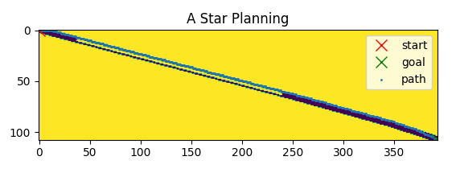
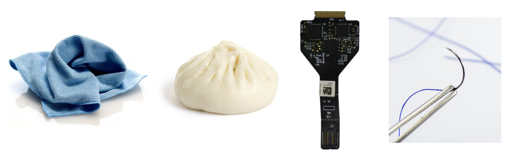
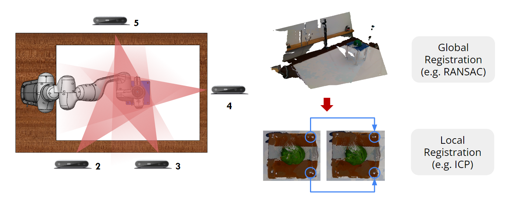
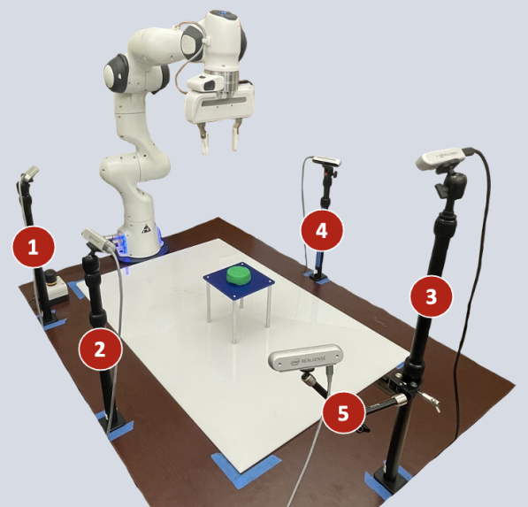
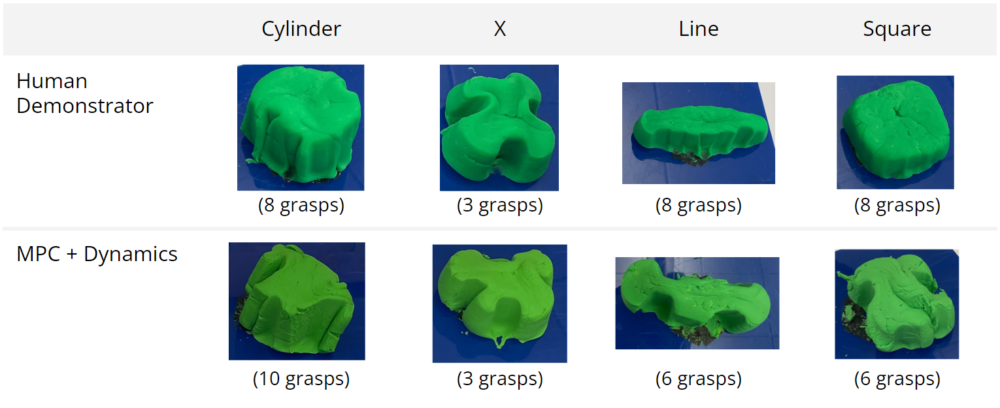

Pre-trained models for deformable object manipulation
Neural Implant Imaging Station
Automated imaging setup for documentation of micron-scale implant threads
CMU Array Benchtop Testing Setup
Setup for positioning 3D-printed neural implant probes for stimulation testing
Diced Wafer Cleaning Fixture
Fixture designed for improved solvent flow and efficiency during chemical
baths, megasonic cleaning, and vapor drying
Gastrostomy Skin Level Device
Design for medical device for patients who
require enteral feeding focused on long-term durability and patient comfort
Globe Night Light
Design of a small, night light toy along with a full manufacturing and assembly process for 500 units
Linear Control and Path Planning of Autonomous Vehicle
Controllers for lateral and
longitudinal control of a Tesla Model 3 in Webots
Algae Filtration for Kelp Growth
Abalone-inspired filtration system for addressing issue of diminishing kelp forests off the Pacific coast of the U.S. and Mexico
Robot Mouth Audio Classification
Learning human-like tonal inflections
for studying lip synchronization on a humanoid robot mouth
Robot Librarian
Nonprehensile manipulation for a shelf organization task
Redwood Desk Organizer
Adjustable length desk organizer made of repurposed redwood
Experience
Robotics Engineer
Medra | June 2024 - Dec. 2025
Unlike traditional lab automation, Medra aims to build a generalizable robotic system that can
execute end-to-end scientific protocols and automate repetitive lab tasks to accelerate scientific discovery.
I owned end-to-end delivery of customer projects,
from concept and prototyping to development and field deployment. I programmed and tested robotic behaviors to automate
lab workflows, including task optimization, error handling, and motion planning for careful handling. I traveled to customer
sites and collaborated closely with partner scientists to translate scientific goals into reliable robotic behaviors and
validate them in their lab environments.
Graduate Researcher
Mechanical and AI Lab | Aug. 2022 - May 2024
The MAIL lab at CMU combines traditional mechanical engineering with the flexibility of AI to solve
complex problems, with work ranging from molecular simulations to robotic manipulation.
With a team of other researchers, I studied learning-based approaches for robotic manipulation of soft
materials (e.g. clay sculpting). We leveraged pre-trained models to predict the
dynamics of materials and plan trajectories. For 3D representation, I used conventional computer vision techniques to stitch
and segment 3D point clouds for comprehensive scene representation.
Teaching Assistant
Engineering Computation | Aug. 2023 - Dec. 2023
I supported students by grading assignments and conducting office hours for 24-780 Engineering Computation, an
introductory C++ programming course that delves into fundamental data structures and algorithms emphasizing
the background algorithms used in modern Computer-Aided Design and Computer-Aided Manufacturing tools.
Robotics Engineer, Intern
Medra | May - August 2023
I wrote and tested robotic protocols for handling biology tools designed for humans including collision avoidance
in a complex environment, used common computer vision techniques for screen reading and manipulation, and tested and debugged in
simulation (PyBullet) as well as on a physical 6 DOF manipulator.
Mechanical Design Engineer, Intern
Neuralink | Jan. - June 2022
Neuralink is building a brain-computer interface that translates neural signals into actions, restoring autonomy to
those with unmet medical needs.
I modeled and built a neural implant imaging station and developed an image processing program for documenting the quality
of the neural implant’s micron-scale threads. My design automated four manual steps from the end-of-line process saving time and risk of damaging
the implant. I also made improvements to the silicon wafer production process by designing and testing a fixture for processing diced wafers.
My design improved solvent flow in chemical baths, megasonic cleaning, and vapor drying processes.
Undergraduate Researcher
Rensselaer Polytechnic Institute | Aug. - Dec. 2021
The Mills Lab at RPI is an experimental cell and tissue biomechanics laboratory focused on understanding the role of
mechanics in disease initiation and progression.
My project in the Mills Lab at RPI focused on improving the robustness of the existing Traction Force Microscopy (TFM)
image processing program to more accurately measure cellular traction forces using images of Schwann cells. Estimating these traction forces
can lead to information about the development of large, soft tumors known as plexiform neurofibromas seen in patients with Neurofibromatosis Type 1 (NF1).
Mechanical Design Engineer, Intern
Neuralink | May - Aug. 2021
Modeled and built fixture for end-of-line electrode impedance testing implemented
on neural implant R&D production line, designed parts for machining and injection molding and drafted technical drawings
Manufacturing Technician, Intern
Neuralink | Jan. - May 2021
Built neural implant test devices and designed
solutions to improve the production process which included stress testing, soldering,
die bonding, thermal sealing, and leak testing.
Education
Master of Science, Mechanical Engineering
Carnegie Mellon University | 2022-2024
Emphasis: Robotics and Controls
Achievements: BRIDGE Fellowship (full tuition & stipend, 2022 - 2024), Co-author, SculptBot:
Pre-Trained Models for 3D Deformable Object Manipulation (presented at IEEE ICRA 2024)
Relevant Coursework: Modern Control Theory, Learning for Manipulation, Deep Learning, C++,
Computer Vision
Bachelor of Science, Mechanical Engineering
Rensselaer Polytechnic Institute | 2018-2021
Achievements: Inventors’ Studio Innovator Award (2021)
Relevant Coursework: Elements of Mechanical Design, Modeling and Control
of Dynamic Systems, Electronic Instrumentation, Finite Element Analysis, Fluid Dynamics
Skills
Design:
Solidworks, NX, GD&T, tolerance stack-up, material selection, DFM/DFA,
PDM systems
PyTorch, Pandas, classification, model training, feature extraction,
data augmentation, fine-tuning
About
Hi, thanks for visiting my website! My name is Charlotte and I'm a mechanical engineer with hands-on experience
in robotics, medical devices, and neural-interface technologies. I enjoy problem solving, designing, and making,
especially alongside teams of passionate engineers and researchers. At Carnegie Mellon, I explored robotic manipulation
and learning for deformable object handling, then applied robotics software to automate lab workflows at Medra. Now, I’m
returning to my core focus in mechanical engineering, excited to tackle challenging projects and turn ideas into real,
production-ready hardware.
Robot Librarian
Nonprehensile manipulation for a shelf organization task
Nonprehensile manipulation refers to manipulation not adapted for or not involving antipodal grasping.
It therefore leverages a wider variety of primitives, such as pushing, sliding, rolling, and tipping
often allowing for certain object interactions that would otherwise be difficult or even impossible with
only a grasping primitive. However, this wider variety of primitives can also lead to challenges in
robotic sensing and control whereby sensitivities like geometry, mass, and friction become more of an issue.
Shelves present a unique challenge in robotics as their confined spaces often limit manipulability and
graspability of the objects inside. These challenges are present in real-world scenarios, especially in
dynamic environments like kitchens, warehouses, and retail spaces, that demand versatile interactions.
Objectives:
In this project, my team and I investigated a shelf organization task and planned efficient robot-pushing
motions, enabling the reorganization of boxes leaning on a shelf to create space for an additional box.
Given the first box is placed vertically and the second box is placed at a random angle, the task is to
plan a nonprehensile push motion to tilt the second box until it is vertical, allowing for a third box to
be placed.
Method:
We first categorized the possible box configurations within the project scope into 4 cases:
Case 1: Indicates there is space to insert a third box with no collisions (boxes 1 and 2
are treated as obstacles)
Case 2: Indicates the third box can be placed by treating boxes 1 and 2 as movable rigid
bodies
Case 3: Indicates there is no space in the current configuration for the third box to
be placed. The robot must execute a nonprehensile pushing motion to create space for
the third box.
Case 4: Indicates all three boxes are in the goal configuration: vertical orientation
inside the bookshelf.
Fig. 1: Examples of cases 1-4 (from left to right). The blue
highlighted region indicates a space large enough to place the third box.
Fig. 2 illustrates the general pipeline of our framework. We learned a classifier that determines
whether of not a box can be successfully placed in a target location given a depth image of the
environment. The classifier was trained on depth images collected from simulation of the scene
initialized with different box configurations. The images were automatically labeled by first
checking if all three boxes were within the boundaries of the shelf at the end of the robot
action, and whether the two initially placed boxes had moved greater than a threshold distance.
Fig. 2: General framework of our approach
Sampling-based Approach:
I explored our first approach for planning an efficient robot-pushing motion which involved uniform random
sampling of contact points on the surface of the box, simulating a push from that location, and evaluating
the quality of the push. This approach is uninformed, meaning it does not exploit any specific knowledge of
the goal and only makes decisions based on what is immediately visible in the current state. It therefore
also does not guarantee a successful push given a certain box configuration. However, it provides a starting
point for later, more informed approaches.
We capitalize on the assumption that a physics simulator (PyBullet) can be used within the planning loop to
evaluate pushing actions. I first randomly sampled 200 contact points on the inclined box. An end-effector
pose was then defined for each contact point using the (x,y,z) coordinates of the contact point and
constraining the orientation to vertical with respect to the world frame as shown in Fig. 3.
Fig. 3: Sampling contact points from surface of angled box and defining end-effector
pose based on sampled point
The corresponding joint angles were then computed using p.calculateInverseKinematics(). If the current
joint configuration was in collision or the IK failed, a zero score was assigned to the attempted push.
Conversely, if the configuration was collision-free, the push was executed using a simple motion primitive defined as
a straight-line movement along the world frame x-axis, opposing the x normal of the sampled point, effectively
pushing against the surface of the box. The heuristic used to evaluate the push was a score proportional to the distance
between the final orientation of the box, p, and the goal vertical orientation, q, both
represented as quaternions:
Search-based Approach:
Unfortunately, the previous approach does not exploit any specific knowledge of the goal to make decisions.
To take a more informed approach, I also attempted a search-based method. Similar to the previous appraoch,
I use the physics simulator within the planning loop.
I first discretized the surface of the box into a grid of points as shown in Fig. 4. I then used an A*
search to find the optimal path to the goal node, which represents the physical location on the box
from which to initiate a push. I used a heuristic similar to the scoring function used in the
sampling-based approach to define a "cost-to-go" estimation such that nodes with lower cost-to-go
estimations will be explored earlier. p is again the final orientation of the box and
q is the goal vertical orientation, both represented as quaternions:
Fig. 4: Discretizing box surface into grid of contact points
I again used a straight-line push motion primitive when evaluating push actions but I changed the
orientation of the end-effector to be parallel with the surface of the box instead of vertical with
respect to the world frame. The discretized points are organized as a numpy.meshgrid.
In the planning loop, the successors of each node are simply the eight neighbors of the current node.
Evaluation:
We ran 50 randomly generated trials and recorded the average plannning time and success rate. In each
trial, the first box is placed vertically, and the second box is placed at a random angle between
(-pi/4, -pi/6) and (pi/6, pi/4). We then run 100 steps of the simulation to allow
the boxes to settle.
Sampling-based Approach:
The uninformed sampling approach achieved a 20% success rate across all 50 trials, and an average planning
time of 25.1 seconds.
Fig. 5: Example of a successful push action (score = 0.998)
Fig. 6: Example of a failed push action (score = 0.794)
Search-based Approach:
The success rate increased to 78% for the search-based approach and the planning time reduced by approximately
20 seconds, with an average planning time of 5.08 seconds per trial, compared to the sampling-based approach.
Fig. 7: Example of a successful push action (h(s) = 0.0042)
Conclusion:
Prehensile manipulation can set artificial limits on the range of tasks a robot can perform. Dynamic nonprehensile
manipulation, which leverages a wider variety of primitives such as pushing, sliding, rolling, and tipping, exploits
dynamics, thereby allowing for certain object motions that would otherwise be difficult or even impossible with only
a grasping primitive. We explore nonprehensile manipulation in a confined shelf environment where various tasks,
such as inserting and organizing are difficult when constrained to prehensile manipulation only. We find that
our search-based approach performs significantly better than our uninformed sampling approach by increasing success
rate and decreasing planning time. For future work, a more sophisticated heuristic could be investigated as well
as a more sophisticated push motion primitive.
Linear Control and Path Planning of Autonomous Vehicle
Controllers for lateral and
longitudinal control of a Tesla Model 3 in Webots
Background:
There have been significant advancements in autonomous vehicle technology in
recent years. As more self-driving vehicles are being developed and tested, there is an increasing
need for robust controllers and efficient path planning algorithms to ensure safe and reliable
autonomous operation.
Objectives:
The goal of this project was to:
Develop an optimal controller for lateral and longitudinal control of a simulated Tesla Model 3 in
Webots making use of the kinematic bicycle model, shown in Fig. 1, for studying the vehicle's dynamics.
Implement the A* path planning algorithm to re-plan the trajectory given a second car is on the track
that you must pass.
Predict the global position and heading from observable states using an extended Kalman filter (EKF)
given some localization information is missing.
The car drives around a track with the same geometry as the CMU buggy course. Buggy is
a time-honored CMU tradition where students race human-powered, small, aerodynamic vehicles around Schenley
Park's Flagstaff Hill. More information on it can be found here. Like
buggy, the goal of the controller is to complete the 0.84 mile course minimizing both time and deviation from
the course.
Fig. 1: Kinematic bicycle model
Method:
Discrete-Time Linear Quadratic Regulator (LQR):
I first implemented an infinite horizon discrete-time Linear Quadratic Regulator (LQR) controller
for lateral control of the vehicle and a simple PID control for longitudinal control. The error-based linearized state
space model for the lateral dynamics is given by:
where e1 is the cross-track error, or distance to the center of gravity of the
vehicle from the reference trajectory, and e2 is the heading error, or orientation error of the vehicle
with respect to the reference trajectory.
The longitudinal dynamics are given by:
Given the A and B matrices, I then discretize the lateral state space model
using signal.cont2discrete(system=(A,B,C,D)), where C is an identity matrix with the same size as
A, and D is a matrix of zeros with the same size as B. I then tune
my Q and R matrices before solving the discrete-time algebraic Riccati equation (ARE) using
linalg.solve_discrete_are(A, B, Q, R). Lastly, we can define the LQR gain as:
and compute the control outputs using:
PID Controller for Longitudinal Control:
For the PID controller, I define a minimum and maximum speed as speed_min and speed_max,
chosen emperically. I then compute the curvature of the track at the current location using the closest waypoint and a waypoint at a
certain look ahead distance (also defined emperically), and set the ideal_speed of the car to be
max(speed_min, min(speed_max, (1/curvature))). Then, the speed_error is simply (ideal_speed-current_speed),
the integrated speed error is total_speed_error, and the derivative of the speed error is speed_error_rate. Lastly,
I tune my PID gains Kp, Ki, and Kd, and compute the output throttle:
F = (Kp*speed_error) + (Ki*total_speed_error) + (Kd * speed_error_rate).
A* Path Planning for Obstacle Avoidance:
Obstacle avoidance is crucial in autonomous vehicle control. In the previous example, there was only
one vehicle on the track, but if another is introduced, we must determine how to safely overtake it. For this, I take a
very simplified approach where I assume we will overtake the other vehicle in the straight-away so we can re-plan the
trajectory once and follow the new trajectory open-loop.
To re-plan the trajectory, we can first compute the H, G, and F values of the known start node, and
add it to the open heap queue using heappush(open_list, start_node). I then implement a loop to continue
searching the map until the shortest path to the end node is reached. Starting at 7:35 in
this video, there is a great explanation of this
search.
Extended Kalman Filter Simultaneous Localization and Mapping (EKF SLAM)
Finally, in the previous implementations, we are given the global coordinates of the
course trajectory, but these are not always available in real-world scenarios. Localization information from GPS
could be missing or inaccurate in tunnels or in close proximity to tall infrastructure. In this case, we do not
have direct access to the global position, X and Y, and heading, psi, and
must estimate them from observable states in the vehicle
frame and range and bearing measurements of map features. I used an extended Kalman filter (EKF) for predicting the
distances to map coordinates whose global coordinates are provided.
Let the state vector be:
where there are n map features at global position m.
The ground truth of these map feature positions are static but unknown, meaning they will not move but
we do not know where they are exactly. However, the vehicle has both range and bearing measurements
relative to these features:
We can assume a closed-form expression for the predicted state as a function of the previous state, and
the measurement can be a function of the state and the measurement noise (more info
here):
Then, I computed F, the Jacobian of the predicted state with respect to the previous state,
and H, the Jacobian of the measurement with respect to the state. I computed these matrices
by hand.
With n = 8 map features, F is a (3 + 2n, 3 + 2n) = (19, 19) size
array, and H is a (2n, 3 + 2n) = (16, 19) size array.
I then iteratively "predicted and corrected", predicting the state and error covariance, then updating both
estimates after computing the Kalman gain.
Evaluation:
Discrete-Time Linear Quadratic Regulator (LQR):
The tuned LQR controller completed the track in approximately 120 seconds with a
maximum deviation of 4.69 meters and an average deviation of 0.41 meters as shown in Fig. 2.
Fig. 2: Performance of linear quadratic regulator
A* Path Planning for Obstacle Avoidance:
I evaluated the performance of my A* implementation with a few arbitrary costmaps as shown
in Fig. 3, to ensure it was behaving the way I intended. These maps do not relate to the track but provide
a more general evalutaion of the function.
Fig. 3: Performance of A* path planning algorithm on arbitrary costmaps
Fig. 4 shows the performance on the actual track where the yellow in the plot represents obstacles.
It can also be seen that we rather naively represent the second car as a large static obstacle. This means
this approach works only when the second car moves at the same velocity each race, and that once we pass the
second car in the straightaway, we must stay ahead of it to avoid collision.

Fig. 4: Performance of A* path planning algorithm on a section of the track (top) and
a GIF of the resulting simulation showing the overtaking of the second vehicle (bottom)
Extended Kalman Filter Simultaneous Localization and Mapping (EKF SLAM)
I tested the performance of my EKF implementation on an arbitrary trajectory as shown in Fig. 5, before
integrating it into my Webots simulation.
Fig. 5: Performance of EKF implementation on arbitrary trajectory
The tuned LQR controller with EKF SLAM completed the track in approximately 121 seconds.
The maximum deviation increased slightly from 4.69 meters when global position was known to 5.10 meters using
global position predictions and the average deviation from 0.41 meters to 0.84 meters as shown in Fig. 6.
Fig. 6: Performance of EKF implementation using previously described LQR
controller on Buggy course in Webots
Conclusion:
In conclusion, studying controllers and path planning for autonomous vehicles is essential
to address the evolving challenges and opportunities in the field and to pave the way for the safe and
widespread adoption of autonomous vehicle technology.
Robotic Clay Sculpting (Research)
Behavioral Cloning and Dynamics Prediction for Robotic Clay Manipulation
Deformable object manipulation presents a unique set of challenges in robotic manipulation including high degrees of freedom, complex dynamics, and severe
self-occlusion. We investigate these challenges through two approaches: learning a latent dynamics model with point clouds as the state representation for
predicting material deformations given a grasp action and training a transformer-based behavioral cloning (BC) framework for predicting action sequences.
Both approaches are focused on the task of robotic clay sculpting with a parallel gripper and all data collection and experiments are conducted on a physical
robot. Our results demonstrate the effectiveness of the latent dynamics model to capture the dynamics of the clay and, when combined with model predictive
control (MPC) and our action sampler, generate a range of simple shapes. However, we find the transformer-based BC framework struggles to learn a comprehensive
manipulation policy due to challenges with the highly multimodal nature of the sculpting task. Through these methods and corresponding experiments, we demonstrate
the generalization capability of the latent dynamics model and the value of leveraging 3D state representations. The limitations of our transformer-based BC
approach reveal the necessity for further research into imitation learning methods for deformable object manipulation that better handle multimodal action
distributions in the demonstration trajectories.

Fig. 1: Robotic manipulation of deformable objects has applications in the automotive industry with the complex assembly of wire
harnesses, surgical robotics, cooking and service robotics, and the agriculture industry where robots may be handling soft fruits and vegetables.
Methods:
We investigate these challenges using the task of robotic clay sculpting and approaching the task with two methods: predicting clay dynamics and
predicting actions.
Vision System:
Both processes share the same visual data processing pipeline:
RGBD data from workspace cameras are registered for a full point cloud representation of the clay. We calibrate four
workspace cameras and use the RANSAC global registration algorithm to roughly align the point clouds. We then use the iterative closest point (ICP)
algorithm for refinement.
Position and color-based cropping are used to isolate the clay. Due to the top-down images
captured from the RGBD cameras, the base of the object is occluded. To form a fully enclosed point cloud shell,
we combine the point cloud with a base plane of generated points.
Point clouds are downsampled to 2048 points using uniform random sampling for faster training.
Fig. 2: Data processing pipeline for point clouds
Latent Dynamics Model:
We leverage the tokenizer from Point-BERT, a pre-trained model trained on the ShapeNet dataset, to learn
a latent representation of the input point cloud data.

Fig. 3: Point-BERT learns a quality reconstruction of the input point cloud data evaluated using Chamfer Distance (CD)
Within this latent space, we predict how features of each point cloud cluster change and deform and output next-state
discrete tokens using a DGCNN token predictor
model. The DGCNN predicts how each cluster’s point token changes given a grasp action. The output next-state discrete tokens are then decoded by the Point-BERT
dVAE decoder to output a predicted, next-state, fully dense point cloud in real space.
Fig. 4: Latent dynamics model prediction pipeline
Imitation Learning:
The transformer-based behavioral cloning (BC) framework predicts a sequence of actions to achieve a goal state. We train two
action-chunking transformer (ACT) policies: (1) with input point cloud observations embedded using Point-BERT,
and (2) with top-down image observations embedded using the default ResNet encoders. We apply rotation augmentations to the point clouds increase the number of
trajectories used to train. Rotation augmentations consist of centering the point clouds on the z-axis and applying a z-rotation with a corresponding z-rotation
of the robot end-effector.
Experiments:
We collect two separate datasets on a physical Franka Emika Panda manipulator: a random
action dataset and human demonstration dataset. The random action dataset is collected by randomly sampling action parameters and executing the
generated grasps. A point cloud of the clay is recorded before and after each grasp. The human demonstration dataset is collected using kinesthetic
teaching where the human demonstrator controls the end-effector position, rotation, and the distance between the fingertips. A point cloud of the clay is again
recorded before and after each grasp.

Fig. 5: Data collection hardware setup
During initial data collection, we were noticing the robot grippers would unintentionally pick up the clay rendering it difficult
to collect more difficult to collect data in the same trajectory. We designed a small part that would act as an anchor to hold the middle of the
clay down to the elevated stage.
Fig. 6: CAD model of the data collection setup with the Franka manipulator, elevated stage for the clay (initialized to
a cylinder), and a small 3D printed screw that acted as an anchor to keep the center relatively restrained to the stage
Latent Dynamics Model:
We find that the dynamics model effectively captures the dynamics of the clay and predicts next-state.

Fig. 7: Next-state dynamics predictions of the clay evaluated using Chamfer Distance (CD)
We plan action trajectories using model predictive control (MPC) and evaluate the results of different sculpting tasks. The dynamics
model trained on the human demonstration dataset had a 16.1% lower mean chamfer distance than the dynamics model trained on the random action dataset.
Fig. 8: Real-world shapes created by human (left) and human demonstration trained dynamics model combined with MPC and
geometric sampling (right)
Imitation Learning:
The transformer-based BC approach struggles with multimodality in the demonstration trajectories. Both of the trained ACT policies converge
to repeating the most common action from the demonstrations regardless of state observation.
Fig. 8: Target shape (left) and poor results from ACT policies trained on images and point clouds, as compared with a human
demonstrator (right)
Robot Mouth Audio Classification
Learning human-like tonal inflections
for studying lip synchronization on a humanoid robot mouth
This project attempts to quantify the human-likeness of sound produced by
a humanoid robot. Humanoid robots are often designed to interact with humans in various settings,
such as homes, workplaces, or public spaces. Therefore, human-like sound allows robots to communicate
with humans in a more natural and intuitive way improving user interaction and social integration.
The robot we used has no speakers and produces sound from a variable pitch pneumatic
sound generator and resonance tube deformed by a series of servo motors along its length as shown in
Fig. 1.
Objectives:
Our goal was to quantify the human-likeness of audio produced by the robot such
that we can use this metric to rate each sound and iteratively update the robot's hardware to
produce a more human-like sound.
Fig. 1: Humanoid robot mouth used for this project
Audio Processing:
The way in which data is processed before inputting it into any kind of
machine learning or deep learning model is fundamental. In the domain of audio, there are
several concepts that aid in data pre-processing.
Mel Spectrograms:
Digital representations of audio signals most often begin as the relationship
of amplitude and time. However, to extract useful information from these signals, a Fourier
transform can be applied to decompose a signal into its individual frequencies and their
amplitudes and therefore convert from the time to frequency domain.
Fig. 2: Example audio signal represented by signal amplitude in
the time domain as well as in the frequency domain after applying a Fourier transform
(Image Source: insightincmiami.org)
Most speech and music signals are non-periodic. This means that to represent
these signals in the frequency domain, a Fast Fourier Transform (FFT) is performed over several
windowed segments of the signal. What results is called a spectrogram. Spectrograms are
visualizations or figures of audio that represent the spectrum of frequencies over time for
an audio recording.
If frequency is converted from Hertz to the Mel Scale, a representation of
frequency that mimics the perception of sound by humans and hence why it is used often in
machine learning, the spectrogram is called a Mel Spectrogram.
Fig. 3: Example Mel Spectrograms of a human (left) and our mouth
robot producing a high-level tone
Mel Frequency Cepstral Coefficients:
The Mel Frequency Cepstrum (MFC) is a discrete cosine transformation (DCT)
on the log of the magnitude of the Fourier spectrum which is obtained by applying a Fourier
transform on the time signal. MFCC’s are coefficients that collectively make up an MFC. MFCC's
visually represent features of the audio remarkably well and therefore can be input into a
convolutional neural network for classification.
Fig. 4: Example Mel Frequency Cepstral Coefficients of a human
producing a dipping tone (left) and a falling tone (right)
Method:
Data Collection:
We first collected several thousand audio recordings from the robot. To construct the
dataset, we first structured each data point as a sequence of 3 varied pitches with a
repeating open and closed actuation of the mouth. We then populated each sequence with an
initial guess of the relative pitch values of a high-level, rising, dipping or a falling tone,
then labeled them as such. We executed these tones on the robot and recorded the audio output.
There was an equal class distribution in these data.
Fig. 5: Data collection and automatic labeling process
Data for human audio recordings, which we also experimented with, were
sourced from the Tone Perfect database. Tone Perfect
includes 9,840 audio files representing 410 monosyllabic sounds in Mandarin
Chinese each recorded from six speakers using four different tones: high-level tone, rising
tone, dipping tone, and falling tone. We used 4,500 of these audio files.
Data Augmentation:
The iteration time for updating the robot hardware to test different
configurations in the hopes of obtaining a more human-like sound would be long. Therefore,
we chose to augment data from the robot in different ways to speed up iteration cycles.
1. The data augmentation process included first compressing the audio
signal from three seconds to one second.
2. Due to a shortened wavelength when compressing the audio signal, this
resulted in an increased pitch. Each audio signal was then pitched down by 1.5 octaves to
return to its original pitch. This was based on human perception of the original pitch and
was not quantitatively computed.
3. The pitch shifting operation caused the decibel level of each
signal to be reduced significantly so each signal was increased by 15 decibels.
4. The pitch shifting operation caused the decibel level of each signal to
be reduced significantly so each signal was increased by 15 decibels.
5. A mic pop at the beginning of each audio signal was removed and
A 0.25 second fade in/fade out effect was added to each audio signal to mimic the change
in volume that may occur when a human opens and closes their mouth.
Fig. 6: Waveplots of example raw robot audio signal and
augmented audio signal
60 MFCC’s for each audio signal were then computed using the librosa sound
processing library, zero padding was applied to ensure square format, and then they were
input into the model.
Model Architecture:
The CNN architecture we used was adapted from
sound-mnist and has 3
convolution layers with relu activation and batch normalization after each layer. Then a
max pooling layer and dropout followed by 3 fully connected layers the last one having
softmax activation.
Fig. 7: CNN architecture used for all experiments
The goal of the model was to learn from MFCC's based on audio produced by humans,
specifically 4,500 signals from the Tone Perfect database, and be tested on 1,120
MFCC's based on audio produced by the robot to determine if the robot sounds were human-like.
We wanted the model to generalize enough such that it could maintain high
accuracy given a validation set of MFCC's that may look very different from what it was trained
on, but still reflect the human-likeness of the validation set through its softmax output
predictions: high value predictions for human-like sounds and low value predictions for
non-human-like sounds. This, however, proved to be a difficult goal.
Evaluation:
We first show here four examples of the MFCC’s that the model learned and
was tested on.
Fig. 8: MFCC's visualizing four tonal inflections produced by
a human (left) and our mouth robot (right)
Training and Testing on Robot MFCC's:
We first split the 1,120 robot MFCC's with 80% (880 MFCC's) for training and
20% (220 MFCC's) for validation. When trained on 880 robot audio signals, the validation
accuracy was 92.4% as shown in Fig. 9. This proves the model can successfully classify robot
MFCC's when trained on them with high accuracy validating the choice of model architecture
for the remaining experiments.
Fig. 9: High model performance when trained and validated using only
robot MFCC's (Hyperparameters used: Adam optimizer, Learning rate = 0.0001, Epochs = 30,
Batchsize = 20)
Training on Human MFCC's and Testing on Robot MFCC's:
For this experiment, we used all 4,920 human MFCC's for training and
validated the model using all 1,120 robot MFCC's. This time, the model had difficulty
recognizing features in the validation set and yielded a 25.00% accuracy.
Fig. 10: Poor model performance when trained on human MFCC's and
validated using robot MFCC's (Hyperparameters used: Adam optimizer, Learning rate = 0.0001,
Epochs = 50, Batchsize = 20)
At around 33 epochs, the validation loss became greater than the training
loss, as shown in Fig. 10, which provides an indication of overfitting in the training data.
The training accuracy was above 99% which is another indication the model began to overfit
the training data and is therefore unable to generalize. This resulted in heavy overprediction
of class 3.
The model was then retrained on the human audio signals with 30 epochs, as
shown in Fig. 11, in an attempt to limit overfitting. The model performed slightly better with
an accuracy of 25.71% and was able to predict tones beyond class 3 but was still largely
overpredicting class 3.
Fig. 11: Poor model performance when trained on human MFCC's and
validated using robot MFCC's (Hyperparameters used: Adam optimizer, Learning rate = 0.0001,
Epochs = 30, Batchsize = 20)
Conclusion:
Future Work:
As this was only a semester long project, we weren't able to run all the
experiments we wanted to. For future work, we would look more into updating the hardware
by either replacing the bagpipe reed with a sound generation mechanism with a larger span of
possible pitches or replacing our air pump with one with a larger span of possible speeds. This
would all be in an attempt to manually produce a sound that sounds more human-like, before
studying which features a neural network uses to classify each tone.
A deep reinforcement learning approach could also be attempted. As the goal
of this algorithm is to maximize the accumulated reward, the agent can ignore possible
limitations in hardware as it is solely identifying the best possible combination of actions
to determine the optimal policy.
The reward estimation could be directly correlated to the softmax predictions
of the model, wherein the predicted value of the desired tone is used as the reward for the
agent.
Final Word:
This is certainly a unique problem and this project is far from complete.
Although the results yielded accuracy lower than we had hoped, we were happy to have chosen
a challenging project and learned from the time we spent working on it.
Gastrostomy Skin Level Device
Design for medical device for patients who require enteral
feeding focused on long-term durability and patient comfort
Introduction:
About half a million children and adults in the United States rely on feeding
tubes everyday. There are over 350 conditions and diseases in which enteral feeding may be necessary.
Enteral nutrition, or the method of delivering nutrition directly to the stomach
or small intestine, is required for anyone who cannot meet their nutritional needs by oral intake
but have a functional gastrointestinal tract. The use of enteral nutrition can be due to several factors.
Dysphagia, a difficulty to swallow, affects one-third of patients with Parkinson’s disease (PD).
Also, maintaining nutritional health can be difficult for people with cystic fibrosis (CF) as well as people
undergoing chemotherapy where a feeding tube can offer much needed nutrients and calories.
Skin level devices, often referred to as “G-buttons” or “Gastrostomy buttons”
are medical devices designed for enteral feeding. They are inserted through a surgical incision
in the stomach called a gastrostomy and interface with a gastrostomy tube through which nutritional
formula flows. The quality of devices like the one shown in Figure 1 is crucial to ensuring patient
safety and comfort. Further research and development in this field will allow for customer feedback
of current products to be addressed. Innovation in the medical device industry in general is therefore
crucial in ensuring that the medical needs of all patients are met.
Fig. 1: Schematic of Gastrostomy Skin Level Device
Design:
Research and Benchmarking:
Following the human-centered design process I first researched and
subsequently defined the problem to provide a basis for development. As part of the research
phase, I developed a customer requirements table along with accompanying functional requirements,
technical interpretations, technical specifications, and metrics.
Table 1: Table of customer requirements each assigned a number
and color coded based on priority
Table 2: Table with functional requirements of the product relating
to each of the customer requirements (Table 1) as well as a technical interpretation of the
requirement
For product benchmarking, a thorough assessment of current technologies
that address similar customer requirements was then completed.
These technologies included products for purchase as well as several U.S. patents.
Fig. 2: Current Products on the Market: AMT MiniONE® “Family
of G-Tubes”
U.S. Patent Application Pub. No. 2006/0052752 was worth noting as it
provides a concept design for a gastrostomy button similar to the mentioned products but with
some improvements. The design offers a non-balloon internal bolster approach to allow for longer
wear time as gastrostomy buttons with silicone balloons must be replaced approximately every
three months to prevent rupture due to the concentration of hydrochloric acid (HCI) present in
gastric fluid. The design also includes two sets of silicone pleats that act as springs to
stabilize the port. An image displaying two views of the patented design are shown below in
Figure 3.
The design process focused on addressing all customer needs especially those
involving patient safety and reliability. As part of the design process, several 3D printed
prototypes of the design were developed, tested, and iterated upon. One of the first prototypes
is shown in Fig. 4.
Fig. 4: Testing of 3D printed prototype for insertion ability
with thin metal rod
Although the first prototype was partially validated through testing, a
device made of silicone rubber only addresses customer requirement 02 regarding reliability to
an extent. Gastric fluid is highly acidic and contains parietal cells that secrete hydrochloric
acid (HCI) to inactivate microorganisms (Heda et. al. 2021). Because of this, most gastrostomy
skin level devices made from medical grade silicone rubber must be removed approximately every
4 months to ensure the internal bolster does not degrade. However, to achieve long-term
durability, a material like polytetrafluoroethylene (PTFE) can be used as it is highly resistant
to HCI between concentrations of 0%-37% and is biocompatible.
The first change made to the second prototype was reducing the thickness and width of the
panels that make up the internal bolster to reduce overall material so the panels would nicely
collapse when stretched. A schematic of the second prototype with labels is shown in Figure 5.
Fig. 5: Labled Schematic of Second Prototype with labels (left) and
dimensions, in mm (right)
Other changes made to the design before building the second prototype addressed
customer requirements 01, safety, and 05, ability for the device to be low-profile. The external
bolster was reduced to a diameter of 12.5 mm from 52.5 mm previously to reduce the overall
volume making the device more low-profile. The tether was increased in width to 2 mm as opposed
to 1 mm previously to reduce the risk of fracture.
The cap was updated to feature custom threads to ensure they cannot interface with other
small-bore connectors that may be in a health care setting. This is a preventative step to
ensure patient safety and is outlined in ISO 80369-3: Small-bore connectors for liquids and
gases in healthcare applications — Part 3: Connectors for enteral applications, a series of
standards developed by the International Organization for Standardization to improve patient
safety with respect to small-bore connectors in healthcare settings.
Fig. 6: Schematic of Second Prototype Cap with labels (left) and
dimensions, in mm (right)
Evaluation:
After designing the new model in Solidworks, it was crucial to investigate
areas of stress concentration for this device as the internal bolster is subject to unique
force distributions in order to stretch out to fit through the stoma.
Fig. 7: FEA Simulation and Mechanical Properties of Internal
Bolster to Identify Stress Concentration Areas
These simulations were used to find stress concentration areas only and
were not used to validate specific stress values
To account for the stress concentration areas at the corners in the internal
bolster, fillets were added to the CAD model to distribute the stress. The second prototype was
3D printed from Formlabs Flexible 80A. Images of the second prototype as well as testing the
internal bolster are shown in Figure 8.
Fig. 8: Testing of 3D printed prototype for insertion ability
with thin metal rod
Risk Analysis:
Lastly, an FMEA risk analysis table was developed to assess risks in the
proposed solution and serve as a tool to further update iterated designs.
Fig. 9: Failure Modes and Effects Analysis (FMEA) for Minimum
Viable Product (MVP)
Conclusion:
Initial testing of my design showed that the prototype could address several of the customer
requirements I outlined at the beginning of the design process. However, by subjecting the prototype
to more rigorous testing conditions, like an environment that simulates gastric fluid, I could further
address potential challenges and refine the design. Fostering innovation within the medical device
industry allows technology to continually advance and meet the diverse and evolving medical needs of
all patients.
Algae Filtration for Kelp Growth
Abalone-inspired filtration system for addressing issue of diminishing kelp
forests off the Pacific coast of the U.S. and Mexico
Background:
Kelp forests are currently diminishing off the western coast of the United States and Mexico due to
warming waters and overfishing of white abalone. Kelp forests reduce wave energy therefore decreasing
the effects of coastal erosion which can wash away homes and the natural coastline. They are also home
to large populations of sea lions, starfish, and white abalone. The white abalone diet consists of algae,
which abalone clean from rock surfaces on the ocean floor providing an optimal place for kelp to grow.
Overfishing of white abalone therefore leads to algae overgrowth and threatens the health of kelp forests.
Fig. 1: (from left to right) Global kelp forest distribution, the
decrease in living shorelines contributes to coastal erosion and leaves coastal properties more
vulnurable to natural disasters, kelp bed recovery efforts include aquaculture of giant kelp
Objectives:
To address the overgrowth of algae due to the decreasing population of
white abalone, my team and I designed and built a prototype algae filtration system that mimics
the abilities of white abalone to clean rock surfaces of algae. The system would work in conjunction
with current efforts to reduce overfishing of white abalone, seed white abalone in restored kelp forests,
and require preventative action against climate change.
Fig. 2: Full CAD Assembly of System
Design:
Overview
Our algae filtration system is designed to be secured to
the rock surfaces in endangered kelp forests via a strong suction cup. It will then be able
to clean the rock surfaces of algae using a motor-powered brush located on the bottom of the
system. After the brush releases the algae from the rock surface, a motor-powered turbine will
produce a vacuum that will pull the now algae-filled water through the filter. Algae will
become trapped on the underside of the filter while clean water will exit through a top vent
in the external casing. I created all of the following CAD models and assemblies using
Solidworks.
External Casing
The external casing is an 11 inch by 7 inch by 4.25 inch enclosure made of
Nylon 6/6 as this material has high corrosion resistance and behaves well in marine environments
for extended periods of time. This material is also easily injection moldable meaning it would
be relatively cheap to manufacture several hundred of these enclosures. The round brush and
heavy-duty suction cup can be seen in Fig. 2 as well as the openings in the bottom of the external
casing that lead to the filter.
Fig. 3: Brush and suction cup of system
Internal Components
The external casing houses two 12 volt (V) DC motors, a turbine (Fig. 3.5),
two simple filters made of mesh, and a 12V 8 ampere-hour (A hr.) SLA battery, shown as the
large black box in Fig. 3. The turbine is press-fit onto the output shaft of one of the DC
motors while the other DC motor is connected to the round brush.
Fig. 4: Interior components of system
Prototype:
The system prototype is a 3D printed 1:2 scaled version of the full system
and includes two DC motors, one suction cup, a 2 inch diameter round brush, and a turbine. The
battery does not fit inside the scaled enclosure so the DC motors were attached to a 12V power
adapter for the final prototype testing presentation. The DC motors are waterproofed with
Sugru™ and marine grease. Images of the prototype are shown below in Figs. 4-6.
Fig. 5: 1:2 Scaled prototype
Challenges:
I thought it would be most meaningful to our presentation to test the
prototype underwater but this meant the DC motors had to be waterproofed. I originally
thought sticking them in a food storage container would be adequate but containers I found
that fit the motors were very large and would require me to scale the enclosure to fit over
them. I then read this article from robotshop.com about waterproofing motors for marine use
using Sugru™ and marine grease.
I rolled out small cylinders of Sugru™ and pressed them into all gaps in
the external casing and then added marine grease to the output shaft, as
shown in Fig. 5, to ensure water does not enter between the casing and the shaft.
Fig. 6: Waterproofing motor
Evaluation:
The prototype was tested in a clear container filled with water. The
wires from each motor were clamped to the side of the container to ensure they do not come
in contact with the water. Each motor was connected to a 12V power adapter to test whether the
motors were fully functional after waterproofing.
Fig. 7: System running underwater
Conclusion:
In conclusion, our prototype algae filtration system, designed to combat algae
overgrowth resulting from the declining white abalone population, has shown promising initial success.
However, we recognize the need for more comprehensive testing in an environment more similar to the
conditions of a real kelp forest to ensure its reliability. While the current results are
encouraging, our focus remains on refining the system through further testing to ultimately
develop a self-sustaining system that fosters the growth of resilient and thriving kelp forests.
Fig. 8: Our poster for the project which includes a root cause analysis
of the problem, system requirements for the full system design, images and a description of our prototype,
and a technical drawing of the assembly
Globe Night Light
Design of a small, night light toy along with a
full manufacturing and assembly process for 500 units
Background:
This project was part of Rensselaer
Polytechnic Institute's (RPI) Manufacturing Processes & Systems (MPS) course
focused on exposing students to common manufacturing techniques used in industry (e.g. plastic
injection molding, CNC machining, metalforming, and automation).
Objectives:
Each MPS team was tasked with designing a product and writing a technical
data package (TDP) outlining every step of the manufacturing process for the product with the intention that
if chosen for MPS II, the second half of the course, 500 units will be produced from raw materials in the RPI Manufacturing Innovation
Learning Lab (MILL). The TDP includes all information for the product including product
component descriptions, a bill of materials, all technical drawings for product components and
all assembly fixtures, vises, and molds used in the manufacturing process, and detailed
manufacturing forms including simulations run on each part using software like Mastercam and
Autodesk Moldflow. The TDP also includes a detailed description of the assembly process
including part transfer and quality control, and a brief description of how all 500 of the
product will be packaged.
Design:
Overview
Fig. 1: Exploded View of Final Design with Labels
Baseplate
The base plate adds weight to the bottom of the assembly such that the user can spin
the globe without it tipping over. I designed the baseplate with a 3 inch diameter and 0.25 inch height.
It also features a clearance hole for the 6-32 threaded rod and a 0.05 inch chamfer.
Fig. 2: Base plate of product designed for CNC machining from Aluminum 6061
Base Body
The base body is the housing for the 9V battery and power switch. I designed it with
constant wall thickness of 0.07 inches and a 3 degree draft on all vertical surfaces to abide by
plastic injection molding design parameters.
Fig. 3: Base body designed for plastic injection molding from
ABS plastic
The base body also has 4 bosses extruded from its underside such that the
base connector disk can be screwed into the bottom of the base body.
The “Rensselaer” text is CNC machined into the part post-plastic injection
molding to avoid use of a side-action cam in the PIM mold.
Base Connector
The base connector interfaces with the bottom surface of the base body and
is secured by four 4-40 flat head screws. The connector also has a thickness of 0.07 inches
such that the mold for it can be implemented into the same mold as the base body. A center
boss with a tapped hole secures the base connector to the threaded rod which extends the
entire height of the assembly.
Fig. 4: Base connector designed for plastic injection molding
Globe Connector Disk
The globe connector disk is the interface between both vacuum-formed
globe halves upon which they are heat staked. The two outermost pins exist for the purpose
of heat staking. Similar to the base body and base connector, the globe connector has a
thickness of 0.07 inches such that it can be produced using the same mold as the other two
parts.
Fig. 5: Globe connector designed for plastic injection molding
An off-centered boss with a 2-56 tapped hole was added to secure the
circular PCBa as shown in Fig. 6. Small pins were also added to act as support pins
for the PCBa and lift it off the main surface of the globe connector.
Fig. 6: Globe connector supporting circular PCBa
Our project was selected by the MPS instructors for Part 2 of the class, which
involved producing 500 units of the globe toy. I graduated from RPI in December 2021, so I wasn’t
part of the production phase, but my teammates who stayed sent photos of the completed toys.
Fig. 7: Globe production line
Fig. 8: My awesome team
CMU Array Benchtop Testing Setup
Setup for positioning 3D-printed neural implant probes
for stimulation testing
Background:
I designed and built this testing setup for the Panat Lab at Carnegie Mellon
University. In a collaborative effort, the lab is developing a microelectrode array, the
CMU Array, fabricated from
depositing metal nanoparticles onto a substrate. The long, narrow shanks are then sintered to create
conductive paths for bioelectric signals as shown in Fig. 1.
Fig. 1: Microelectrode array fabricated from
depositing metal nanoparticles onto a substrate
Fig. 2: Array can be tested in vivo using neural activity
from anesthetized mice but removing unnecessary animal testing is ideal
Fig. 3: Benchtop testing allows for neural recording sessions
using a stimulating electrode to simulate neural activity
Objectives:
The array can be tested in vivo using neural activity (Fig. 2) from anesthetized
mice but benchtop testing allows for neural recording sessions using a stimulating electrode
to simulate neural activity (Fig. 3) which can reduce variability between experiments and eliminates
the need for live animals. Before designing the setup, I outlined 3 main objectives:
1.
Reduce movement of the electrode and substrate from outside disruption
by securing them in fixtures designed for their unique geometry.
2.
Increase accuracy when moving electrode and substrate by
securing their fixtures to translational stages.
3.
Reduce difficulty of clearing the optical table by securing all hardware
to an optical breadboard that is screwed into the table and can easily be switched out
when needed.
Design:
To address the first objective, I designed a subassembly for the probe. Two
small translational stages (Thorlabs DT12) are used: one is mounted to the elevated stage and
allows movement of the arm in the x, and one is mounted to the arm and allows movement of
clamped substrate in the z.
Fig. 4: Probe Subassembly
The substrate clamp restricts all movement of the substrate and ensures the
electrodes are in the same location for every test. The bottom part of the clamp is permanantly
secured to the translational stage while the top part can easily be removed via two captive
screws.
Fig. 5: Substrate Clamp
The electrode needed to intercept with the probes at a certain angle and
was therefore mounted onto a 3D printed part and clamped into place in a similar way to the
substrate: via a captive screw. I press fit an insert into the bottom part of the electrode
clamp to ensure the threads wouldn't strip after many uses.
Fig. 6: Electrode clamp shown empty with slot channel for electrode
wire (left), placing the wire into the slot (middle), and a fully clamped electrode (right)
The electrode clamp extends from the front camera via a strut channel as
shown in Fig. 7.
Fig. 7: Full assembly with side camera, front camera with electrode
mount, and probe subassembly
To mount the cameras, I first designed a 90 degree bracket to secure the
3-axis translational stages (Thorlabs DT12XYZ) to the aluminum breadboard. Then, I designed
another bracket to mount the round, lens mounting clamp (Infinity Large Mounting Clamp) to
the stages. This would allow each camera three degrees of freedom and a secure and minimally
invasive way to mount the cameras.
All four of the brackets were first cut from a 1 ft. Aluminum 6061 L bar
and manually machined to obtain the cutout for the stages and necessary holes and
countersinks as shown in Fig. 8.
Fig. 8: Cutting L Bar and Machining Camera Mounts
The brackets are shown assembled onto the aluminum breadboard in Fig. 9.
Fig. 9: Stage bracket (left) supports entire camera assembly
including XYZ stages, camera, and camera mount, front camera bracket (middle) supports camera
mount and strut channel, and side camera bracket (right) supports camera and camera mount
I 3D printed all components of the probe subassembly, press-fit inserts
into the substrate clamp (Fig. 11) and assembled them onto the laser-cut acrylic stage
elevated by hex standoffs. The clear container for PBS is a simple storage container from
The Container Store.
Fig. 10: Assembled Probe Subassembly
Fig. 11: Assembled Substrate Clamp
Evaluation:
Camera positioning is crucial for the test as the XYZ stage also moves the
electrode wire for stimulating each probe. Example photos I took to test camera positioning
are shown in Fig. 12.
Fig. 12: Positioning Cameras
Unfortunately, my internship in the lab ended before I could conduct further testing,
but potential future evaluations could involve rigorous testing of long-term stability, real-time
data processing capabilities, and correlation studies with in vivo experiments.
Conclusion:
The microelectrode array testing setup I designed and built allows for benchtop testing with a stimulating
electrode, reducing variability and eliminating the need for live animals.
Redwood Desk Organizer
Adjustable length desk organizer made of repurposed redwood
Background:
At one of my internships I sat at a desk right next to an aisleway which sometimes
got very busy and distracting. I had this idea that I wanted some kind of separator that also doubled
as an organizer for some of the tools I used everyday. None of the desk organizers I could find on
Amazon were quite what I wanted so when I got home I quickly modeled my idea.
Objectives:
I wanted the design to have an elevated surface for my plant to sit on.
This, along with compartments to organize my desk items, would act as a separator
between my desk and the aisleway next to my desk. I also wanted the freedom to adjust the size of
the organizer in case I ended up needing more space on the desktop.
Fig. 1: Initial CAD model
Fig. 2: Visualization of two sliding compartments
Approach:
I used repurposed redwood from an old play structure in my backyard that my dad
had recently dissasembled. We first rip cut large pieces of the wood such that they were the correct width
and depth for the boards I needed. I then used the table saw to cut grooves in the vertical standing
boards for a through dado joint. These joints would better support the shelving than a butt joint.
Fig. 3: Joint used to support shelving
I then assempled all the pieces applying a generous amount of wood glue between each,
and clamped them together. After about 48 hours, I sanded the entire strucutre including any excess wood glue
from the joints and applied a polyurethane finish to protect the wood from water that might leak from the plant.
Fig. 4: Applying a wipe-on polyurethane finish to protect the wood from water
I am overall very satisfied with how it turned out and used it for the rest of my internship.
Fig. 5: The completed organizer on my desk where I use it to store tools I used daily
and display my very quickly growing plant
Neural Implant Imaging Station
Automated imaging setup for documentation of micron-scale implant threads
Background
This project was part of my mechanical engineering internship at Neuralink. The Neuralink
implant contains micon-scale threads that are inserted into the motor cortex, a region of the frontal lobe
that is responsible for planning and executing motor movements, via a high-precision surgical robot. The
robot uses a needle that sews the threads into the brain by first inserting onto a small loop on the end of
each thread.
Objectives
The purpose of the implant imaging station is to take a high resolution image of the implant
loops to ensure they are all located on the same plane and in a location in space that the robot is able to pick
them up. The station also takes two images of the full implant as a visual quality check and documentation
before packaging.
Approach
I designed the assembly in Solidworks. The program moves a 2X magnification camera along a
translational stage in small increments, taking an image at each step. These images are stitched into a single
high-resolution view, followed by two full-field images of the implant, all of which are automatically uploaded
to a database. The system automated four previously manual steps of the implant production process.
Fig. 1: Full assembly
Components
Baseplates
The baseplate serves as the main surface that all components mount to. I designed the part for
CNC machining and it is made from Aluminum 6065.
Fig. 2: Baseplate designed for CNC machining
The baseplate includes countersunk mounting holes to fasten the top and bottom plates together,
along with integrated tapped holes for securing all hardware. Edge cutouts were added for cable management.
Camera Subassembly
The USB camera subassembly includes a motorized translational stage, camera tower, mount, manual
focus stage, USB camera, 1.25X objective, and Coaxial LED spot light.
Fig. 3: Coaxial (brightfield) lighting was used
to capture the highly reflective polyamide loops.
Fig. 4: The USB camera mount attaches the camera to the manual
translational stage, allowing for fine vertical focus adjustment.
Enclosure
The enclosure provides a white imaging backdrop and controlled lighting via a
mounted ring light. I laser-cut the panels from white acrylic and assembled the enclosure, with
cutouts for the moving camera tower and fixed board cameras.
Fig. 5: Enclosure designed for laser cutting and provides white
backdrop and controlled lightning for all images
Fig. 6: Angled board camera mount orients board camera at 45 degrees
for full images of the implant
System Setup
I installed the fully assembled imaging station on the production line after
recieving the machined parts (baseplates and camera tower), integrated the motorized stage and
cameras with a PC, and developed the control program to capture, stitch, and automatically upload
all required images to the database.
Fig. 7: Imaging station on implant production line
Diced Wafer Cleaning Fixture
Fixture designed for improved solvent flow and efficiency during chemical baths, megasonic cleaning, and vapor drying
Background
This project was part of my mechanical engineering internship at Neuralink. The existing cleaning fixture, used to clean the
microfabricated array threads, was heavy and designed for horizontal processing, which limited cleaning efficiency in chemical baths,
sonication, and vapor drying. Horizontal orientation reduces particle removal during megasonic cleaning and hinders proper drainage during vapor drying.
The microfabrication team also found the fixture difficult to handle due to it's size and weight.
Objectives
Redesign the cleaning fixture for vertical processing to improve particle removal and solvent flow, reduce fixture weight for easier
handling, and maintain precise support and minimal contact for delicate wafers during chemical and sonic cleaning steps.
Approach
I redesigned the fixture with sub-flush faces at the chip and loop regions, and added 45° drafted edges on cover cutouts for improved
solvent flow, and added bosses for support with minimal contact also improving flow.
Fig. 1: Features for increased solvent flow
Fig. 2: Redesigned fixture
The fixtures were machined from lightweight PEEK, reducing weight and making them easier for the microfabrication team to handle while
maintaining durability and chemical resistance.
Fig. 3: Fixture cover with press-fit alignment pins and PTFE inserts installed for clamping the wafer
The previous design also used steel thumbscrews, which left particles on the wafer with repeated use. I designed a custom quarter-turn
fastener machined from PEEK with a steel press-fit pin to secure the top and bottom of the fixture. After testing 20 cycles of fastening and unfastening,
the quarter-turn fastener produced significantly fewer particles on an empty wafer compared to the steel screws.
Fig. 4: Assembly of fixture with custom fastener for reduced particle generation
Fig. 5: Thumbscrew particle generation
Fig. 6: Reduced particle generation with custom PEEK fastener
I ordered all machined components for a batch of 10 fixtures and fully assembled each unit. My internship ended shortly after, but
I delivered the set ready for immediate use, ensuring a smooth handoff.